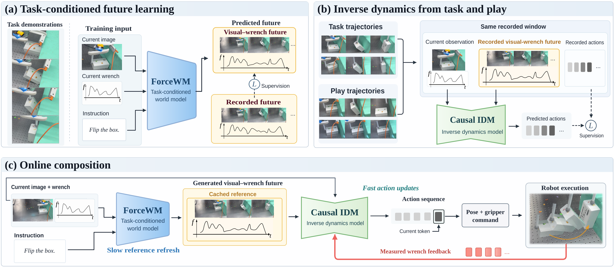
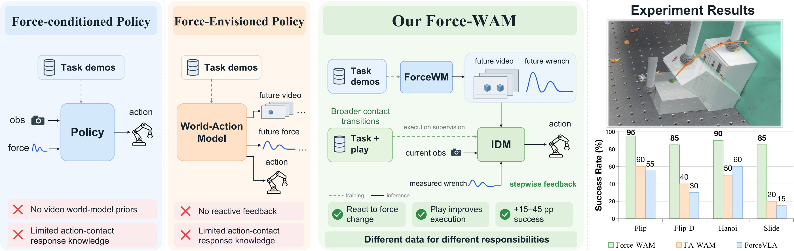
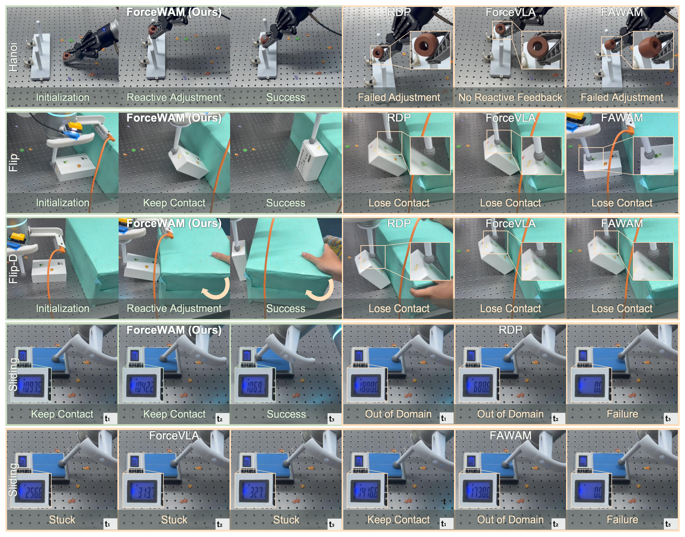
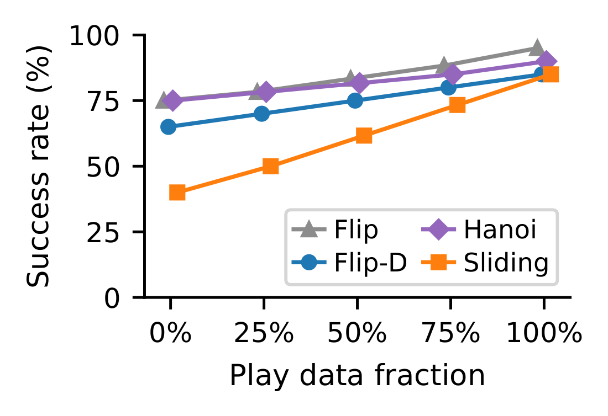
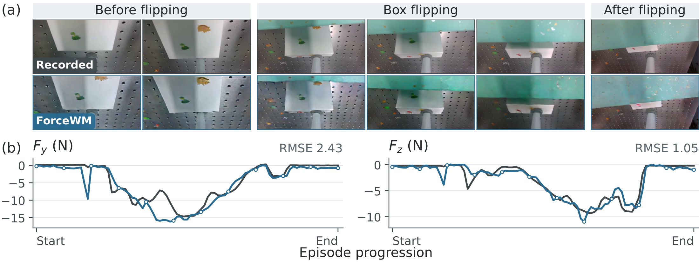

Learn task-compatible futures
ForceWM learns from successful demonstrations to jointly generate future wrist-camera video and six-axis wrench trajectories. The current observation and task instruction guide the interaction it predicts.
A force world action model
A play trajectory need not complete a task to teach how actions change contact.
ForceWAM learns task-compatible futures from demonstrations and execution from task and play.
Success gains from task-agnostic play
Mean success across four conditions
Joint future prediction, reactive execution
The play insight
Successful demonstrations show how motion and force evolve along a task-solving trajectory. A successful push, for example, may reveal little about how the load changes when the robot presses farther or backs away. Exploratory pressing, sliding, and release in task-agnostic play provide additional experience of these action–contact responses.
A play segment records actions together with the visual and force changes that followed. Given the current observation and this recorded visual-wrench future, the actions from the same segment provide a training target for the inverse dynamics model—even when the segment does not accomplish the task.
Condition
Current observation
+ Recorded visual-wrench future
Action target
Action sequence from
the same recorded segment
ForceWAM assigns the choice of task-compatible futures to ForceWM, trained on successful demonstrations. The IDM learns execution from recorded task and play interactions. At deployment, ForceWM supplies the future for the IDM to realize, allowing the robot to draw on broader contact experience while pursuing the task.
The future specifies both how the scene should change and how contact forces should evolve. This gives the IDM a reference for motion and contact together.
Expert demonstrations show how to complete contact-rich tasks, but provide limited coverage of how interaction forces respond to different actions. Task-agnostic play provides broader experience of contact dynamics without specifying task goals. To fully leverage these two types of data, we introduce ForceWAM, a force world action model that decouples knowledge of task-compatible interaction outcomes from knowledge of how local actions change contact. A world model learns from successful demonstrations to jointly predict future video and six-axis force/torque trajectories. Together, these futures describe the expected evolution of motion and contact during the task. A separate inverse dynamics model (IDM) learns from both task and play, mapping current observations and recorded visual-wrench futures to their associated robot actions. Play data thus provide knowledge of force responses for goal-directed execution. At deployment, the IDM reactively translates generated futures into actions, reusing them with fresh wrench feedback between world-model updates. Across real-robot force-regulated sliding, box flipping with and without disturbances, and ring placement, ForceWAM achieves 85–95% mean success, surpassing world-modeling and reactive baselines. Our experiments further show that adding task-agnostic play data improves success by 15–45 percentage points, demonstrating its value for learning contact-rich execution.
Method
This division of supervision gives task demonstrations and play distinct roles: demonstrations define task-compatible visual-wrench futures, while both sources teach the actions associated with observed outcomes.
ForceWM learns from successful demonstrations to jointly generate future wrist-camera video and six-axis wrench trajectories. The current observation and task instruction guide the interaction it predicts.
The inverse dynamics model learns from current observations, recorded visual-wrench futures, and the associated actions. Play expands this execution supervision with interactions that need not demonstrate task success.
ForceWM supplies a task-compatible future to the IDM trained on task and play. The causal, slow–fast executor reuses that future while updating actions with newly measured wrench feedback.


Real-robot experiments
Three task families test sustained force regulation, controlled rotation, disturbance response, and precise seating. ForceWAM achieves the highest reported mean success in each condition.
01 / SLIDE
85%Complete the sliding path while satisfying the 5–15 N contact-force criterion, targeting 10 N.
02 / FLIP
95%Maintain tool–box contact and a controlled pushing force as the box rotates over its edge.
03 / FLIP-D
85%Complete box flipping when an external push changes the contact state during execution.
04 / HANOI
90%Place a held ring onto a 10 mm pole, using contact feedback during alignment and seating.
| Method | Slide | Flip | Flip-D | Hanoi |
|---|---|---|---|---|
| RDP | 15 | 40 | 30 | 45 |
| ImplicitRDP | 20 | 45 | 25 | 55 |
| ImplicitRDP + Play | 10 | 25 | 10 | 30 |
| ForceVLA | 15 | 55 | 30 | 60 |
| Cosmos Policy | 15 | 40 | 30 | 60 |
| Cosmos Policy + Play | 10 | 20 | 15 | 40 |
| Fast-WAM | 10 | 50 | 25 | 65 |
| FA-WAM | 20 | 60 | 40 | 50 |
| π0.5 | 10 | 40 | 20 | 60 |
| ForceWAM Task-only IDM | 40 | 75 | 65 | 75 |
| ForceWAM Full-play IDM | 85 | 95 | 85 | 90 |
Each evaluation run uses 20 trials per task. Values are reported mean success rates, not individual rollout counts. All methods use the same safety limits and controller interface. “+ Play” denotes additional action-labeled play data.

Testing the play insight
We keep task demonstrations, ForceWM, and IDM optimizer updates fixed while increasing the play data used for execution learning. Each task family has 200 demonstrations and a pool of 200 play episodes; Flip and Flip-D share their training data.
Adding the full play pool improves success by 15–45 percentage points. Sliding improves from 40% to 85%. These gains come from updating the executor’s training data, with the same task-trained model supplying its future conditions.
Adding play reduces success for the evaluated ImplicitRDP and Cosmos Policy variants in all four conditions (main comparison). Together with ForceWAM’s gains, these results support assigning task-compatible future learning and local response learning to separate objectives.

Inside the world model
During closed-loop box flipping, ForceWM predicts both the changing tool–object geometry and the contact loading that accompanies it: approach, rotation, and separation.

All variants below retain the current wrist image and measured wrench feedback, use task + play data, and are trained independently. Joint visual-wrench conditioning gives the best reported mean success across all four conditions.
| Future conditioning | Slide | Flip | Flip-D | Hanoi |
|---|---|---|---|---|
| Visual + wrench | 85 | 95 | 85 | 90 |
| Visual only | 15 | 40 | 30 | 70 |
| Wrench only | 20 | 30 | 25 | 30 |
| No future conditioning | 15 | 30 | 35 | 50 |
| Visual + wrench, no augmentation | 65 | 80 | 70 | 75 |
See it in action
Twelve real-robot rollouts across four evaluation conditions. Select a task to explore the recordings. Playback speed is indicated in each video.
Maintain contact while moving along the scale. The task targets 10 N, with a 5–15 N contact-force criterion.
Coordinate motion and contact force to carry the box over its edge.
Six recordings show contact-rich execution with externally applied perturbations.
Reference
If you find this work useful, please consider citing it.
@misc{xu2026forcewam,
title = {{ForceWAM}: Decoupling Future and Response Learning from Demo and Play Data for Contact-Rich Manipulation},
author = {Zijun Xu and Wendi Chen and Xinkai Wang and Jiachen Zou and Hongjin Chen and Hairuo Liu and Bokai Lin and Shihao Ma and Ke Ma and Zhiwei Zhang and Zhuohao Yan and Ke Wu and Haoming Song and Xueqi Li and Chuan Wen and Jieru Zhao and Wenchao Ding and Cewu Lu and Lixin Yang},
year = {2026},
note = {Preprint}
}